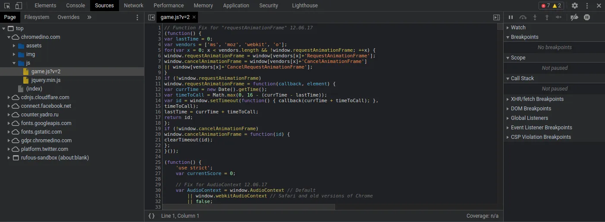
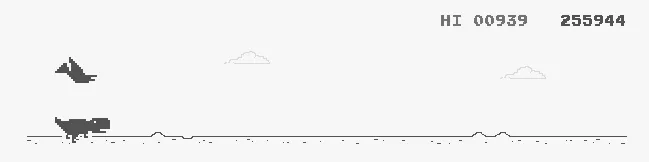
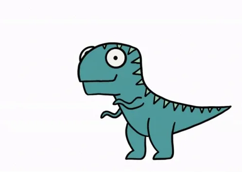

Plus de connexion Internet pour bosser ? Il est alors temps de démarrer l’activité préférée des développeur·euses web sans Internet : jouer avec le dino de Chrome. Ce petit jeu à la simplicité débordante est un parfait passe-temps lors des périodes non propices à la productivité, bref, quand on a envie de faire une pause. Mais est-ce que c’est pas hyper classe de pouvoir arriver à la machine à café en montrant un screenshot du dino de Chrome avec un score indécent ? Absolument pas, mais c’est tout de même rigolo.
Pendant un coding dojo sur la rétro-ingénierie, nous nous sommes amusé·es à construire un script qui serait capable de rivaliser avec la crème des joueuses et des joueurs du Chromedino. L’objectif est simple : jouer avec les mêmes moyens qu’un·e joueur·euse pour faire le meilleur score possible. Donc adieu tous les trucages de score en mémoire, les dinos qui volent au-dessus des obstacles ou tout autre obscénité virtuelle, nous partons à la conquête du leaderbord des dinos.
Pour cet article, nous avons travaillé avec la version de jeu du site Chromedino.com car je suis un hipster qui utilise Vivaldi.
Déconstruire le Chromedino
Lorsque l’on fait de la rétro-ingénierie, deux choix s’offrent à nous :
- la voie de la simplicité ou boîte blanche, consistant à utiliser le code qui est disponible pour le lire, le comprendre et l’utiliser au mieux.
- la voie de la compréhension ou boite noire, où l’on va chercher à comprendre le comportement d’un code uniquement en effectuant des actions sans jamais utiliser la source (car non disponible).
Une troisième voie existe malgré tout et est valable dans des langages dont le code est compilé : celle de la boîte noire qu’on a essayé de repeindre en blanc. Grosso modo, des programmes existent pour décompiler un code afin d’obtenir notamment les instructions approximatives qu’exécute le fameux code. La lecture et la modification de ces informations est très complexe, mais permet de faire plein de choses fabuleuses, comme par exemple les fameux cracks no-cd qui permettent de lancer des programmes sans les CDs nécessaires. Bien évidemment, la décompilation n’est souvent pas légale, car elle enfreint les conditions d’utilisation des logiciels. Bref, c’était pour votre culture.
Dans le développement Web, on peut très souvent faire de la rétro-ingénierie en boîte blanche étant donné que le code est uniquement interprété et reste souvent lisible. Les seules difficultés de lecture peuvent venir d’un code qui a été obfusqué, pour justement repousser les gens à mettre leurs pattes dans le code.
Pour notre Chromedino, nous allons nous servir des outils de développement pour accéder directement au script du jeu. Dans l’onglet Sources des outils, on peut consulter l’intégralité des assets chargés pour notre page. De fait, on va y retrouver le script permettant de faire fonctionner le Chromedino sous le nom de game.js?v=2.

Le fameux code du jeu
En lisant le fichier, on remarque tous les classiques d’un jeu vidéo : une boucle de rendu pour mettre à jour le jeu en permanence, des sons, des contrôles, des objets pour représenter le dino (Trex) ou les obstacles, etc. La chose intéressante est que, à la ligne 69, l’objet Runner contenant l’intégralité du jeu est placé dans les variables globales de window. Du coup, nous avons déjà un point d’entrée pour manipuler le jeu directement par son code et sa mémoire. Et c’est déjà un sacré coup de pouce pour pouvoir s’amuser.
Pour vérifier notre hypothèse, démarrez le jeu une première fois en appyant sur la flèche haut, puis lancez la commande suivante dans votre terminal :
Runner.instance_.restart();Votre jeu redémarre. Nous pouvons donc faire ce que nous voulons avec le jeu. C’est parti !
Je scripte, donc je suis
L’objet Runner.instance_ contient un bon nombre d’informations qui vont nous intéresser :
tRexcontient l’objet de notre dinosaure adoré.horizoncontient les objets relatifs aux obstacles viahorizon.obstacles.currentSpeedcontient la valeur de la vitesse actuelle du jeu.
Il y a bien d’autres choses, mais pour réussir à aller loin, je n’utilise pas plus de données.
Si on lit le code du jeu, on remarque que le dino effectue la commande suivante lorsque l’on presse la touche pour sauter (ligne 487) :
this.tRex.startJump(this.currentSpeed);Du coup, nous pouvons vérifier le bon comportement du saut en entrant la commande suivante dans notre console (quand le jeu est démarré) :
Runner.instance_.tRex.startJump(Runner.instance_.currentSpeed);Incroyable, le dino a sauté ! Nous pouvons donc le contrôler. Mais comment peut-on effectuer nos actions à n’importe quel moment du jeu ?
Pour se faire, nous allons “écraser” la boucle de rendering (la fonction update()) pour rajouter les actions que nous souhaitons faire à chaque mise à jour du jeu, puis appeler l’ancienne fonction de mise à jour pour conserver le comportement normal du jeu. Cette technique s’appelle le monkey-patching.
D’un point de vue code, si nous souhaitons faire sauter le dino dés que possible, nous pouvons utiliser le code suivant :
const ctx = Runner.instance_; // Keep instance in a variable for shorter code
ctx._update = ctx.update; // Save old update function
ctx.update = () => {
ctx._update();
ctx.tRex.startJump(ctx.currentSpeed);
};
ctx.restart();Notre dinosaure s’est épris d’une rage folle et saute maintenant comme un marsupilami. C’est déjà un bon début ! Mais ne serait-il pas mieux que le dinosaure ne saute que si on repère un obstacle proche ?
Dans ce cas, nous allons vérifier si un obstacle est à moins d’une certaine distance du dinosaure. En testant un petit peu, nous avons déterminer que, de base, si un obstacle est à moins de 160 pixels sur le canvas, il vaut mieux sauter.
ctx.update = () => {
ctx._update();
if (ctx.horizon.obstacles[0].xPos < 160) {
ctx.tRex.startJump(ctx.currentSpeed);
}
};
ctx.restart();Okay, là, on a l’impression qu’une intelligence artificielle a pris le contrôle du Chromedino. Cependant, certains enchaînements de cactus peut tromper notre dino, qui va lamentablement s’écraser sur lesdits cactus.
Pour corriger ce problème, il nous suffit d’utiliser la fonction pour tomber plus rapidement quand on presse la flèche du bas. On applique la chute rapide quand le premier obstacle a aussi atteint une certaine position.
ctx.update = () => {
ctx._update();
if (!ctx.horizon.obstacles.length) {
return; // Don't do anything if there's no obstacle
}
if (ctx.horizon.obstacles[0].xPos < 160) {
if (ctx.horizon.obstacles[0].xPos < 50) {
if (ctx.tRex.jumping) {
ctx.tRex.setSpeedDrop();
}
} else {
ctx.tRex.startJump(ctx.currentSpeed);
}
}
};
ctx.restart();Dernière obstacle : les oiseaux. Notre dinosaure a de trop petites pattes pour sauter au-dessus des oiseaux les plus hauts. Nous allons donc uniquement sauter si l’obstacle n’est pas trop haut. Sinon, nous allons nous baisser constamment pour éviter les mauvaises surprises.
ctx.update = () => {
ctx._update();
if (!ctx.horizon.obstacles.length) {
return;
}
if (ctx.horizon.obstacles[0].xPos < 160) {
if (ctx.horizon.obstacles[0].xPos < 50) {
if (ctx.tRex.jumping) {
ctx.tRex.setSpeedDrop();
}
} else if (ctx.horizon.obstacles[0].yPos > 75) {
// Bird too high
ctx.tRex.startJump(ctx.currentSpeed);
}
}
if (!ctx.tRex.ducking && !ctx.tRex.jumping) {
ctx.tRex.setDuck(true);
}
};
ctx.restart();La condition pour vérifier si un oiseau est trop haut peut sembler bizarre, car on va uniquement sauter si l’obstacle a une coordonnée y au-dessus de 75, et non au-dessous. La raison du sens de cette condition vient du fait qu’en informatique, l’axe Y est inversé par rapport aux mathématiques. Le point (0,0) se situe en haut à gauche et non en bas à gauche dans un canvas ou une image.

On raconte qu'il se s'arrêta plus jamais.
Voilà ! Nous avons un script simple qui permet de faire des scores élevés à ce jeu (même s’il plante de temps en temps sur les 500 premiers points). On aurait aussi pu modifier directement le score avec un petit Runner.instance_.distanceRan = 10000000;, mais ce n’était pas aussi drôle que de voir notre dinosaure s’affranchir seul de tous les obstacles.
N’hésitez pas à essayer d’améliorer le script, ou même de remplacer les appels aux sauts par des dispatch d’évenements claviers.
J’espère que ce petit article vous aura plu, et si vous souhaitez nous faire part de remarques, de commentaires, de compliments ou d’insultes (on ne sait jamais), hésitez pas à m’en faire part. Bon été ! :)
 Merci de votre lecture ! <3